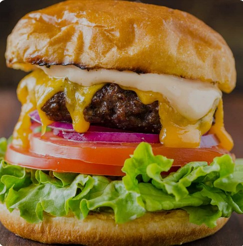

Burger Recipe

Nothing beats a simple hamburger on a warm summer evening. Pile these burgers with your favorite condiments and pop open a cool drink!
Ingredients
- 1 lb ground chuck beef, (80/20)
- fine sea salt, to taste
- freshly ground black pepper, to taste
- 4 burger buns
- 4 slices medium cheddar cheese, (thick sliced)
- 1 large tomato, sliced into 8 rings
- 8 leaves green leaf lettuce
- 1/2 medium red onion, thinly sliced into rings
- 1/2 cup dill pickle slices
Instructions
- Slice, and prepare all of your burger toppings and sauces.
- Spread the cut-side of the bun with softened or melted butter and toast the cut side on a skillet or on the grill until golden brown. You can toast the bun ahead or in the last couple of minutes with the burgers on the grill. Toasting the bun adds great flavor and prevents a soggy bun.
- Preheat grill to medium heat. Divide ground beef into 4 portions and form patties that are about 1/2" thick and 1" wider than the burger buns. Season patties generously with salt and pepper.
- Grill hamburger patties (indent-side-up) covered for 3-5 min each side on the grill. Flip burgers when juices are accumulating on top of the burger and you have a good sear. Apply cheese in the last 1-2 minutes of grilling then cover with the lid and cook until the internal temperature of beef reaches 160˚F.
How to make burger sauces
- BBQ Aioli: 1/3 cup mayo + 1 tsp BBQ Sauce (we love sweet BBQ)
- Mustard Aioli: 1/3 cup mayo + 1 tsp yellow mustard
- Dijon Aioli: 1/3 cup mayo + 1 tsp dijon mustard
- Fry Sauce: 1/3 cup mayo + 1 Tbsp ketchup